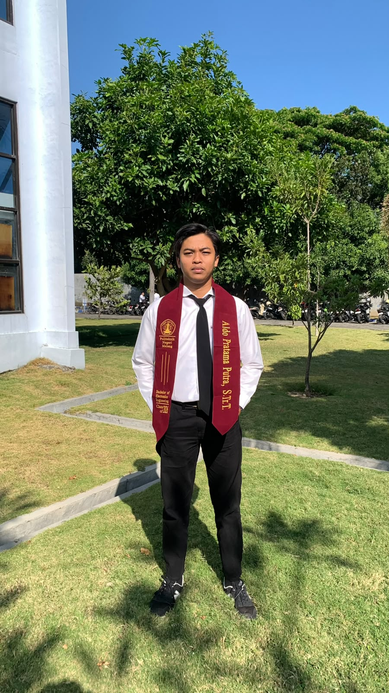
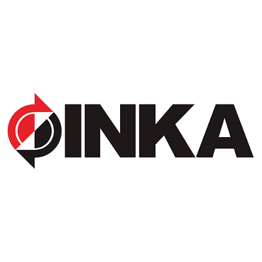
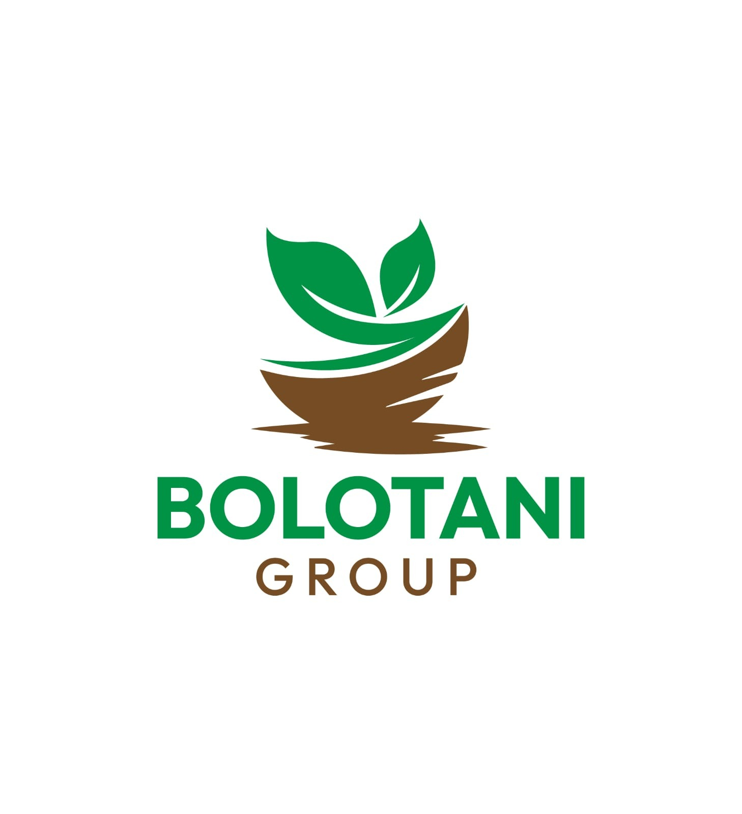

Project Title
Deskripsi pekerjaan akan muncul di sini.
Deskripsi pekerjaan akan muncul di sini.
PORTFOLIO LOADING
Lulusan Sarjana Terapan (D4) Teknik Elektronika Politeknik Negeri Malang dengan spesialisasi di bidang Otomasi Industri dan Sistem Kontrol Elektrikal. Memiliki pengalaman magang dalam Quality Control dan perancangan kelistrikan kereta, serta kompeten dalam pemrograman PLC, pembacaan skematik kontrol industri, serta troubleshooting sistem kelistrikan daya dan kontrol. Berorientasi pada efisiensi operasional dan standar keselamatan kerja industri.



GPA: 3.52/4.00
[2022 - 2026]
Selama menempuh pendidikan di Program Studi D4 Teknik Elektronika, saya mempelajari dan mengembangkan kompetensi di bidang elektronika, instrumentasi, sistem kendali, mikrokontroler, serta otomasi. Proses perkuliahan juga memberikan pengalaman dalam mengerjakan proyek, praktikum, dan penelitian yang berorientasi pada penerapan teknologi di dunia nyata.
Aktif mengikuti ekstrakulikuler keolahragaan, mengikuti lomba lomba tingkat kota dan aktif dalam event drumband sekolah hingga provinsi.
Mengikuti berbaga perlombaan keolahragaan dan aktif dalam akademik.
Mengikuti berbagai event seperti baris beraris, pengibaran bendera merah putih, kepanitiaan dan volunteer acara sekolah serta aktif pada ekstrakulikuler keolahragaan.
Aktif mengikuti program kerja himpunan, mengikuti berbagai seminar, aktif kepanitian serta mengerjakan tugas dan project project.

Quality Control Electric Internship.

Rancang Bangun dan Implementasi Pompa Air Otomatis Bertenaga Surya untuk Penyiraman Bibit Bawang Merah di UD.Bolo Tani.

Himpunan Mahasiswa Elektro.
Mari terhubung! Silakan hubungi saya secara langsung melalui platform di bawah ini.